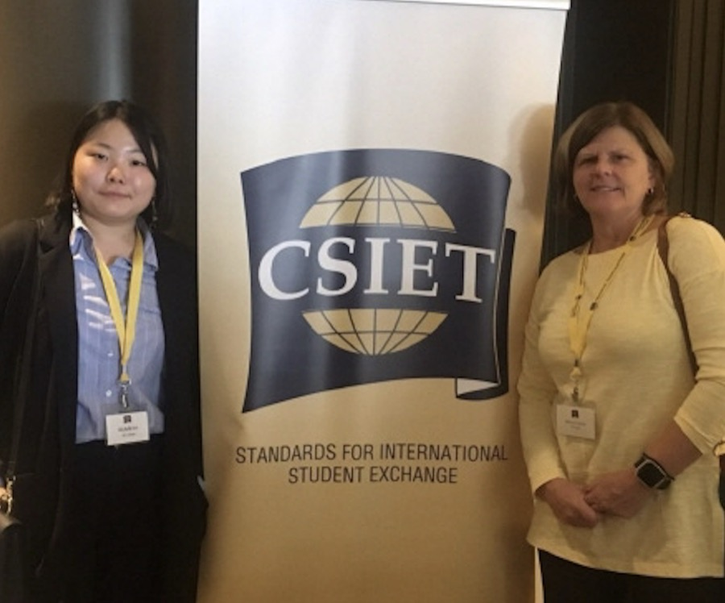
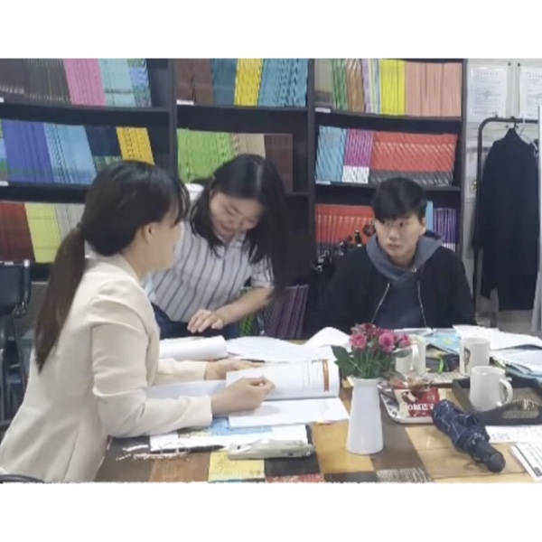
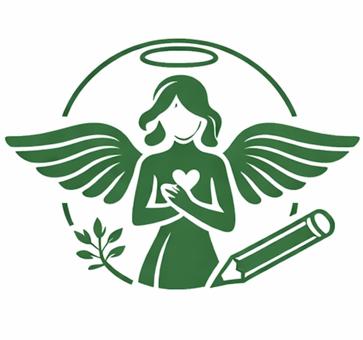
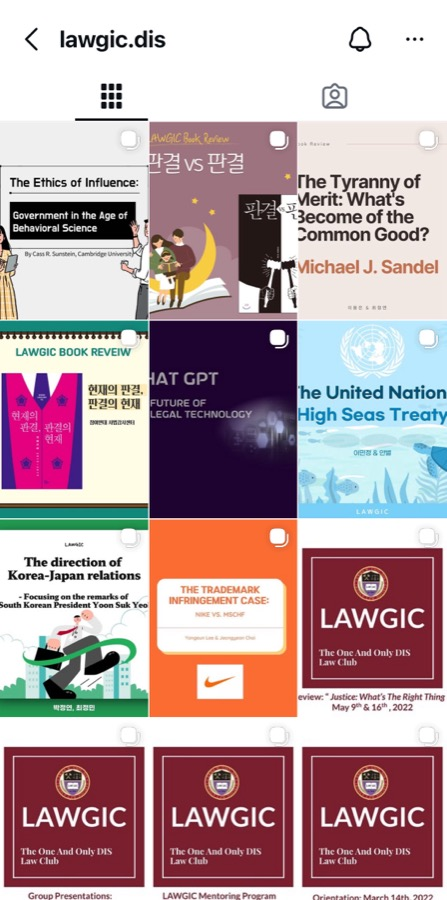
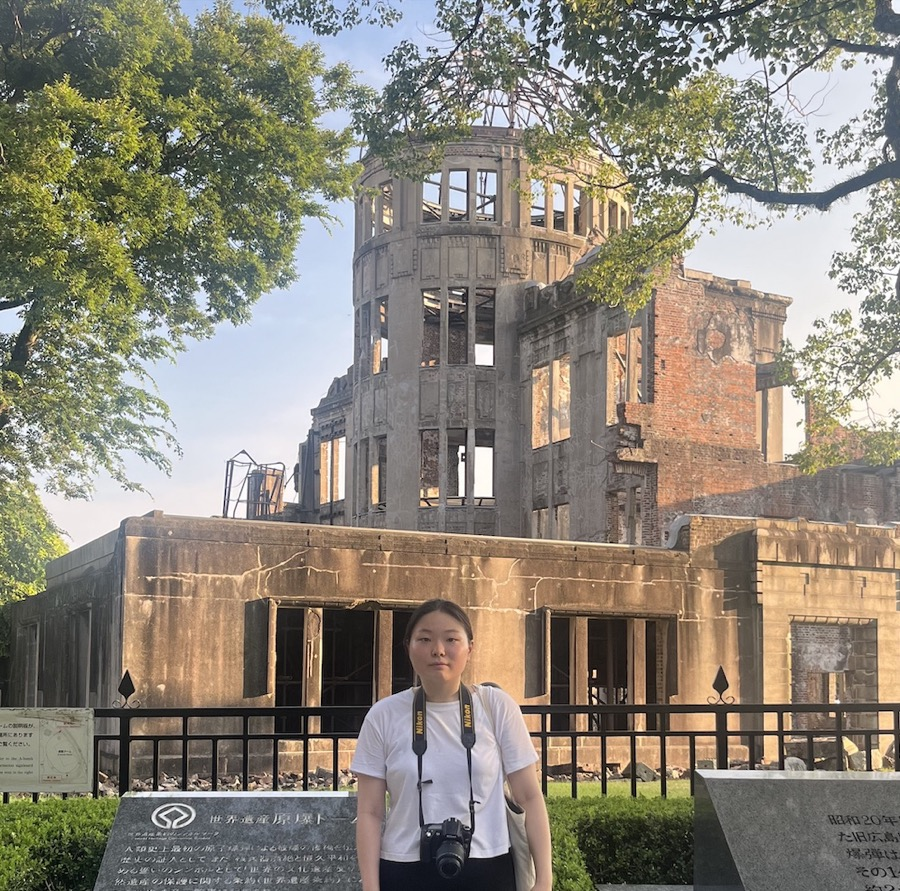
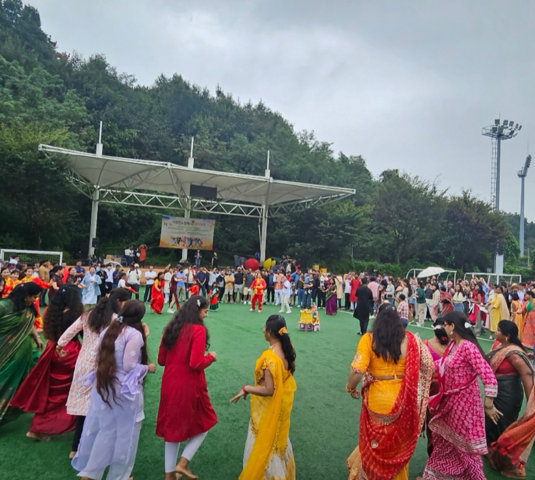
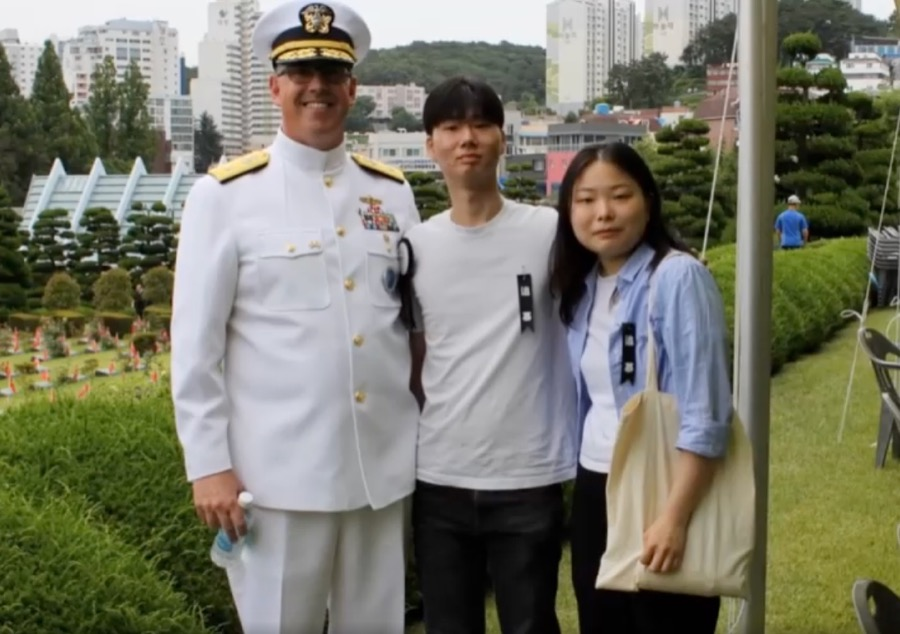

My Story
Click on any image to learn more. Watch ↗

Oct 2018 - present
ISC Global
International Student Exchange Coordinator (formerly Youth Volunteer)
More →
Aug 2019 - present
AsianHub
Translation Volunteer
More →
Mar 2021 - present
Angels for the Journey
Co-Founder & Director of Educational Programs and Partnerships
More →Visit site ↗
Mar 2021 - June 2023
LAWGIC & Academic Consortium for Economics
Elected Council Member & President
More →Mar 2023 - Aug 2023
Undergraduate Research with Prof. Jean S. Kang
Research Fellow
More →
Jul 2023 - present
Leaders Times
Intern (formerly Student Journalist) for Global News Team
View archive →Jun 2024 - Dec 2025
Media Watch
Translation Assistant for Media Watch Editorial Department
More →
Jun 2024 - present
Mission Center for Migrants
Volunteer Interpreter
More →
Jul 2024 - present
Soldiers' Angels
Letter Writing Team Volunteer
More →Jul - Aug 2024
Peaceful Unification Advisory Council
High Honors in Photography & Video
More →Sept 2024 - June 2025
Welltain Christian International School
Supplemental Instructor for English and Social Science
More →Sept 2025 - present
Lumen Education Program Co., Ltd.
Co-Founder & Director of Publication and Outreach
More →Visit site ↗May 2026 - present
Jurio: Korean Labor Rights App
Co-Creator & Legal Content Researcher
More →Visit site ↗